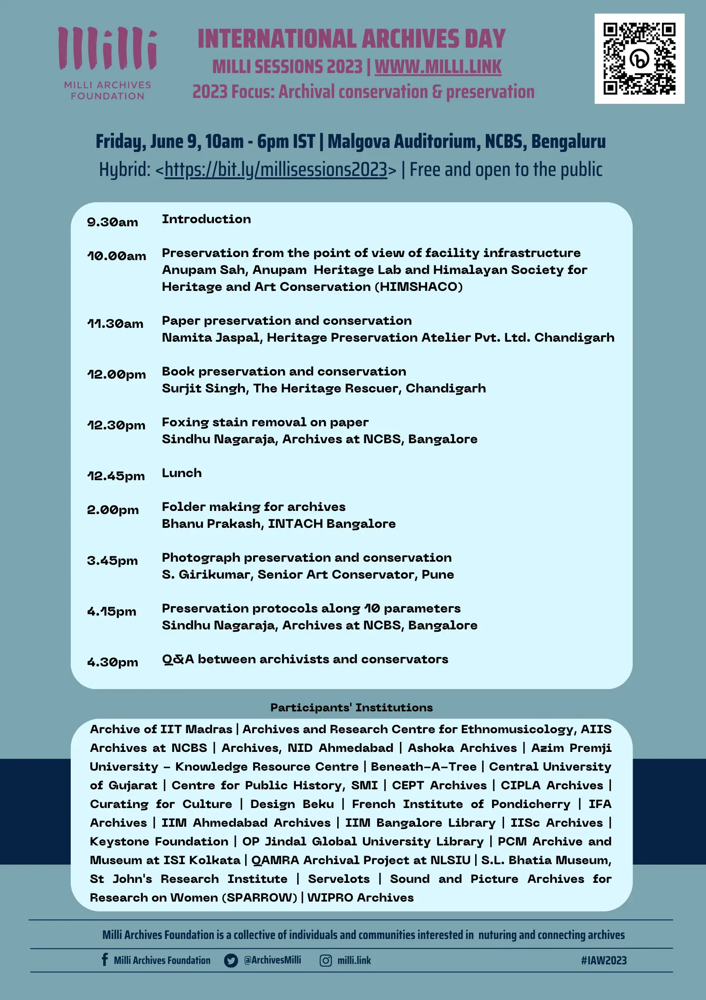

Milli Archives Foundation is a collective of individuals and communities interested in the nurturing of archives.
2023 Focus: Archival conservation/preservation
Free and open to the public.
Hybrid Event
Malgova Auditorium, NCBS // Online link: https://bit.ly/millisessions2023
Event Schedule
Fri, Jun 9 2023
- 9.30am - 9.45am : Welcome
- 10.00am - 11.15am : Preservation from the point of view of facility infrastructure
- Anupam Sah, Founder and Head, Anupam Heritage Lab and Himalayan Society for Heritage and Art Conservation (HIMSHACO)
- 11.30am - 12.00pm : Paper preservation and conservation
- Namita Jaspal, Director and Chief Conservator, Heritage Preservation Atelier Pvt. Ltd. Chandigarh
- 12.00pm - 12.30pm : Book preservation and conservation
- Surjit Singh, Director and Conservator at The Heritage Rescuer, Chandigarh
- 12.30pm - 12.45pm : Foxing stain removal experiments on paper
- Sindhu Nagaraja, Archival conservator, Archives at NCBS, Bangalore
- 12:45pm - 1.45pm : Lunch
- 2.00pm - 3.30pm : Demonstration workshop on folder making for archival paper, books and photographs
- Bhanu Prakash, Senior Conservator, INTACH Bangalore
- 3.45pm - 4.15pm : Photograph preservation and conservation
- S Girikumar, Senior Art Conservator, Pune
- 4.15pm - 4.30pm : Preservation protocols for a facility
- Sindhu Nagaraja, Archival conservator, Archives at NCBS, Bangalore
- 4.30pm - 5.30pm : Q&A between archivists and conservators